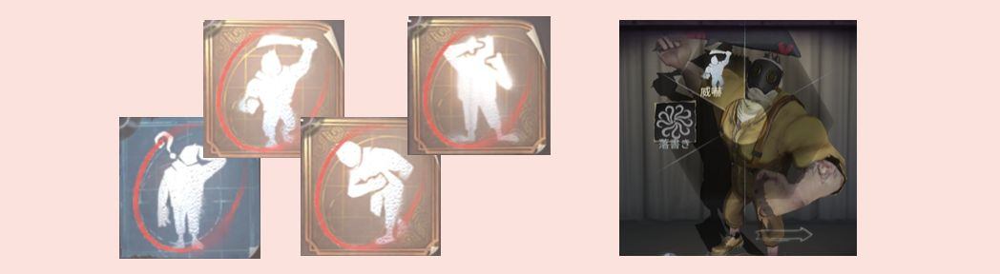
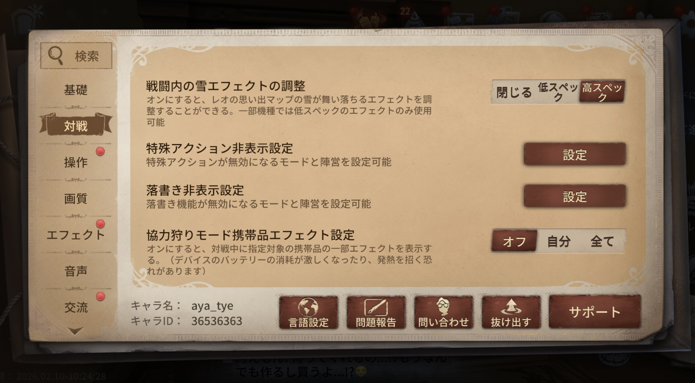
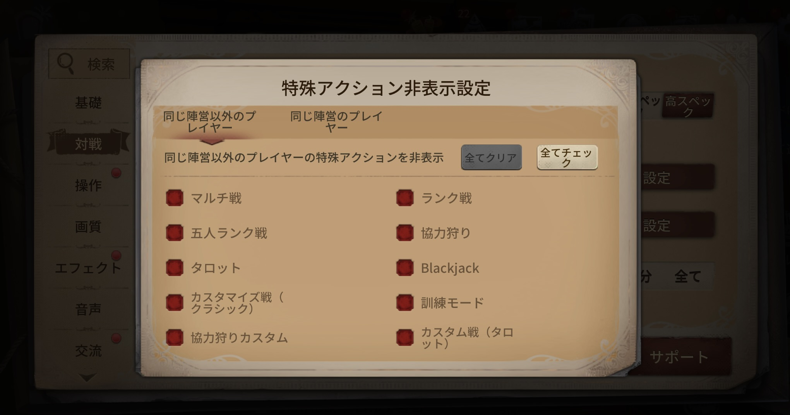
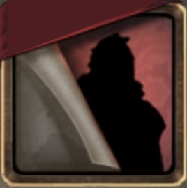

📢 最新アップデート情報
●2025年6月26日アップデート
🔹対戦内の特殊アクション、落書き機能のブロック設定を追加
特殊アクション（移動を伴う特殊アクション、2人用アクションを除く）や落書きを非表示にするモード、およびそれらのモードで非表示にする具体的な陣営（同じ陣営、同じ陣営以外、全陣営）を選択可能です。また、従来の他のプレイヤーの落書きを非表示にする機能は削除されました。
移動を伴う特殊アクション使用中は、移動、操作、スキルなどの行動によってアクションが中断されなくなりました。
🔹アクション（エモート）、落書きの消去方法
STEP 1
まず右上の設定を開きます。
STEP 2
そして対戦を押します。

STEP 3
その後、下に下がっていくと、特殊アクション非表示設定と落書き非表示設定が出てきます。そこで設定を押します。
STEP 4
設定を押すと、同じ陣営のプレイヤー、同じ陣営以外のプレイヤーの特殊アクション、落書きが各項目で非表示設定できます。

📝 おさらい
- 設定
- 対戦
- 下にスクロール
- 特殊アクション非表示設定 or 落書き非表示設定の設定を押し
- 非表示にしたいモードを選択
エモートの利用方法
エモートって友達同士で遊ぶものだと思ってない？？
私はいっさいエモート使ってこなかった。だけど、エモートの使い方によっては試合をひっくり返すこともあるんだよ。それでは、紹介していく！！
🔹サバイバー編
-
空軍: 風船救助の時に、エモートで風船から降ろさせる可能性が→ エモートの種類も重要！
-
泣きピエロ: 救助や、風船救助状態の時に、エモートで惑わす。


🔹ハンター編
- 復讐者（レオ）: エモートで恐怖の一撃を狙う！
- 夢の魔女: エモートで恐怖の一撃を狙う！
- ハンター全員: 風船持ち上げを誘発させる。
- ハンター全員:裏向きカードを使い、異常を匂わせて通電後即殴りor恐怖の一撃



「エモートのなんて遊びだけでしょ？？」と思っていた方、
ちょっとだけエモートに対する気持ちが変わりましたでしょうか？？
これからも試合に活用できるエモートがでることを待ち望んでおります！！
みんなのコメント